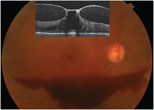
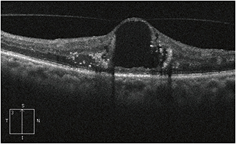
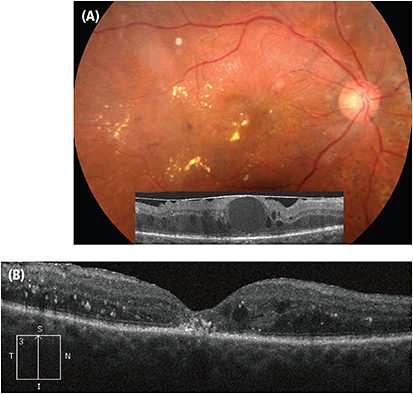
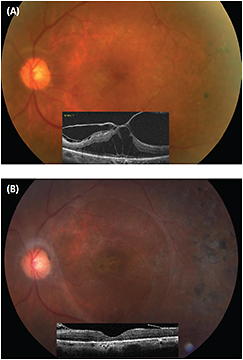

Diabetic retinopathy is the leading cause of blindness among working age adults in the industrialized world.1 Clinically significant diabetic macular edema (DME), the most common cause of vision loss in diabetics, affects 770,000 people in the United States.2,3 Without treatment, 50% of eyes with DME will lose two or more lines of vision within two years of diagnosis.4 While the incidence of DME can be reduced with systemic control of serum glucose, hypertension and hypercholesterolemia, the need for ophthalmic treatment of DME is common.
But despite the availability of multiple therapeutic agents, cases of refractory DME continue to challenge ophthalmologists. Intravitreal anti-Vascular Endothelial Growth Factor (VEGF) agents have recently become a mainstay for the treatment of DME. Focal laser and corticosteroids still remain important treatments. But, subsets of patients still exist who could benefit from a surgical approach to the treatment of DME.
This article will review the pathophysiological and clinical evidence that supports the surgical management of DME.
The pathogenesis of DME is multifactorial and includes a cascade of complex biochemical processes. One theory is that the primary insult of hyperglycemia leads to the development and acceleration of advanced glycation end products (AGEs). AGEs form on proteins, lipids and DNA, modifying their structure and function. Along with promoting leukostasis and causing damage to pericytes and endothelial cells, AGEs are believed to promote mechanical changes in the vitreous and at the vitreoretinal interface. Removal of the AGEs from the vitreoretinal interface could promote resolution of diabetic retinopathy.5,6
A posterior vitreous detachment (PVD) has been associated with spontaneous resolution of DME7; eyes with DME have been shown to have a lower incidence of PVD compared to eyes without DME.8 Theoretically, vitrectomy with or without internal limiting membrane removal could help to improve DME by multiple mechanisms. These mechanisms include the release of abnormal vitreomacular adhesions, elimination of free and bound VEGF loads, and improved diffusion of oxygen to the retina from the vitreous cavity.9
Although vitrectomy could clear the vitreous of its VEGF load, intravitreal medications might also be cleared more quickly once the vitreous is removed, and this is not desirable. Intravitreal triamcinolone acetonide, for example, is cleared 1.5 times faster in eyes that have undergone vitrectomy as compared to those that have not.10 Intravitreal medications have become the most frequently used treatment for DME. Decreasing their half-life early-on in the course of a patient’s treatment could necessitate more frequent injections to maintain VEGF blockade or require medication via sustained-release devices.
Evaluating an eye for surgical intervention begins with good medical evaluation and treatment. The Diabetic Retinopathy Clinical Research (DRCR) Protocol I showed that patients who receive ranibizumab (Lucentis, Genentech, South San Francisco, CA) injections with prompt or deferred laser fared better than those who received laser alone.11 In part because of this and other studies, intravitreal anti-VEGF agents are increasingly used as first-line treatment for DME. Focal laser still has a role, especially in cases with non-center-involving DME. In cases with edema threatening but not involving the fovea, focal laser can decrease edema before it becomes more visually significant. It is worth noting that these cases with non-center-involving DME were not randomized into the trials of anti-VEGF medications.
Regarding steroid injections, in addition to triamcinolone, the Ozurdex (dexamethasone, Allergan, Irvine, CA) implant and the Iluvien (fluocinolone acetonide, Alimera, Alpharetta, GA) implant were recently approved by the Food and Drug Administration for diabetic macular edema. The DRCR has an ongoing study of combination therapy with ranibizumab and dexamethasone that could shed light on how to use these agents in chronic non-responsive cases.12
In most non-responsive cases, physicians should not consider surgery until they have maximized medical treatments. Surgery includes a vitrectomy with detachment of the posterior hyaloid and peeling of any associated epiretinal membranes with or without internal limiting membrane (ILM) removal. Candidates for surgical treatments include those with vitreomacular traction (VMT), a taut posterior hyaloid, or those with an epiretinal membrane (ERM).
When evaluating these patients, ophthalmologists should use the clinical exam and optical coherence tomography (OCT). It is important to determine if the posterior hyaloid is separated completely (usually signaled by the presence of a Weiss ring) or if there is vitreomacular adhesion (VMA) and/or ERM. In cases where the status of the posterior hyaloid cannot be determined by exam and OCT, B-scan ultrasound may be helpful. Posterior vitreous separation happens in stages; many patients will have perifoveal separation with persistent adhesion at the fovea and disc. One challenge in evaluating patients is differentiating vitreous adhesion from vitreous traction. Focal distortion of the retinal contour at the site of adhesion is more suggestive of traction, as is a more perpendicular angle between the retina and posterior hyaloid (Figure 1). Patients with a flat posterior hyaloid attached to a cyst may be less likely to benefit from vitrectomy (Figure 2).
Figure 1: Fundus photo and OCT (inset) of a patient with proliferative diabetic retinopathy and tractional macular edema. There is focal distortion of the retinal contour around the fovea that is tented up by persistent vitreofoveal adhesion. In addition to causing macular edema, as the posterior hyaloid separated from the macula and optic disc, traction on neovascular tissue has caused subhyaloid hemorrhage which is visible in the photograph and as hyper-reflective points between the retina and posterior hyaloid.
Figure 2: OCT of a patient with diabetic macular edema with a large central cyst and surrounding lipid. The posterior hyaloid is attached to the cyst; however there is no focal distortion of the retina at the site of adhesion, and the posterior hyaloid is oriented more tangential to the retina than in Figure 1. This appearance is less suggestive of a tractional component to DME and this patient may be less likely to benefit from pars plana vitrectomy.
On occasion, patients with a diffusely attached posterior hyaloid can still have a tractional component to edema. Lewis et al. first observed that some eyes with DME had a “thickened, taut and glistening premacular posterior hyaloid,” and suggested these eyes may benefit from vitrectomy.13 OCT was not available at the time of the original publication and funduscopic features included a glistening sheen and striae to the posterior hyaloid (Figure 3). The striae were limited to the hyaloid and did not involve the retina or associated retinal vessels, differentiating them from the retinal striae seen in eyes with epiretinal membranes. Lewis and colleagues reported that vitrectomy with removal of the posterior hyaloid was associated with complete resolution of the DME in 80% of eyes and improvement in macular edema and vision in 9 out of 10 patients. Some subsequent studies14 have shown anatomic improvement and less visual improvement. This could be in part due to post-vitrectomy cataract progression.
Figure 3:
A) A patient with DME related to a taut posterior hyaloid. Fundus photos show a glistening sheen and striae in the posterior hyaloid along with micro-aneurysms, lipid and edema typically seen with DME. OCT (inset) shows diffuse thickening with intraretinal cysts and distortion of the retinal contour. There is a prominent hyper-reflective line anterior to the retinal surface with multiple sites of vitreomacular adhesion. Visual acuity is 20/200.
B) OCT of the same patient two months after pars plana vitrectomy, induction of a posterior vitreous detachment and internal limiting membrane peeling. The edema is significantly improved and the foveal depression has returned. There is still hyper-reflective material in the outer retina and below the fovea in areas of lipid deposition. The outer retinal bands are lost beneath the fovea likely due to presence of lipid and to damage from chronic edema. Visual acuity improved to 20/80.
Diabetes has been associated with an increased risk of ERM, independent of diabetic retinopathy.15 In patients with or without diabetes, ERMs can cause macular edema. These ERMs can be observed ophthalmoscopically as a sheen or translucent membrane on the retinal surface. They can produce retinal striae with or without retinal folds. OCT shows a hyper-reflective membrane that may distort the normal contour of the inner retina. The majority of these membranes are avascular, but they can become thickened and vascularized in patients with proliferative disease as the posterior hyaloid and membrane act as a scaffold for neovascularization. Ophthalmoscopically the vascular membranes are white and on OCT look much thicker than avascular membranes (Figure 4).
Figure 4:
A) Fundus photo and OCT (inset) of a patient with proliferative diabetic retinopathy with visual acuity of 20/400 due to significant diabetic macular edema with a vascularized epiretinal membrane. The epiretinal membrane is seen as a thickened and hyper-reflective structure anterior to the retina and attached to the fovea. There is an additional thinner membrane on the anterior surface of the retina which may be a secondary membrane or may be due to
vitreoschisis.
B) Fundus photos and OCT (inset) three months after pars plana vitrectomy and limited membrane peeling. The posterior hyaloid was tightly adherent to the optic nerve and to areas of regressed neovascularization. The hyaloid was not detached but the vitreous and membranes were removed from around the macula. Visual acuity improved to 20/100 with resolution of macular edema on the OCT. Remnants of the membrane can be seen at the edges of the scan.
Few studies have specifically looked at the role of ERM peeling in eyes with DME. One that did studied a group of 241 eyes with DME (87 with VMT, 154 without VMT) that underwent pars plana vitrectomy. Ninety-four (61%) of the 154 without VMT had ERM peeling. ERM peeling was associated with improved visual acuity. This group, however, did not show a corresponding reduction in macular thickness on OCT. The authors suggested that the improvement in visual acuity might have resulted from improvement in visual distortion rather than improvement in DME.16
To some degree the decision to perform surgery in these cases is driven by traction and ERM rather than the DME itself. The majority of cases of refractory DME do not have traction or ERM.17 Vitrectomy with and without ILM peeling has been advocated for these cases; however there has not been significant benefit over laser in the absence of traction.18 Most of the studies were performed prior to widespread use of OCT. Additional studies using OCT are needed to better evaluate the vitreomacular interface. Most were also performed prior to the era of anti-VEGF injections, so it remains to be determined if vitrectomy is beneficial in anti-VEGF non-responders. The increased clearance of anti-VEGF agents in vitrectomized eyes must be considered prior to recommending surgery for these eyes.
Vitrectomy technology is advancing, with 23- and 25-gauge vitrectomy systems reducing operating times and reducing the risk of iatrogenic retinal breaks. Ophthalmologists now have more access to 27-gauge systems. While the principles of vitrectomy are the same no matter what the gauge, as safety and efficiency continue to improve the indications for the procedure may expand.
The recent approval of ocriplasmin (Jetrea, ThromboGenics, Iselin, N.J.) for pharmacological vitreolysis in patients with vitreomacular traction raises the possibility that vitreolysis could benefit patients with DME while avoiding surgery. ThromboGenics is in the planning phase of a study using the drug to help prevent progression from background retinopathy to proliferative retinopathy.19 Theoretically, vitreolysis could release tractional forces from the macula, although it is unclear if traction could be released in patients with epiretinal membranes and multiple areas of adhesion. Pharmacological vitreolysis would have the advantage of not significantly changing vitreous clearance of anti-VEGF medications. Postvitrectomy cataract progression would also be eliminated.
Technology and drug development are advancing rapidly in ophthalmology. Newer generation OCTs provide excellent resolution of the vitreoretinal interface and retina. Further studies may identify imaging markers associated with either favorable or unfavorable visual prognosis in patients with recalcitrant DME. Several studies have already shown the preoperative and postoperative prognostic value of the OCT appearance of the external limiting membrane and ellipsoid zone (also known as the inner segment/outer segment line).20,21 As new drugs are approved we will need to learn how they fit into the growing list of therapies for DME. In patients who have failed medical therapy and who have a vitreoretinal interface abnormality such as a taut hyaloid, vitreomacular traction, and/or epiretinal membrane, vitrectomy should be considered. OM
1. Sivaprasad S, Gupta B, Crosby-Nwaobi R, et al. Prevalence of diabetic retinopathy in various ethnic groups: A worldwide perspective. Survey of ophthalmology. 2012;57:347-370.
2. Ding J, Wong TY. Current epidemiology of diabetic retinopathy and diabetic macular edema. Curr Diab Rep. 2012;12:346-354.
3. Centers for Disease Control and Prevention. National Diabetes Fact Sheet: National Estimates and General Information on Diabetes and Prediabetes in the United States. Atlanta, GA: US Department of Health and Human Services, Centers for Disease Control and Prevention; 2011.
4. Ferris FL,3rd, Patz A. Macular edema. A complication of diabetic retinopathy. Surv Ophthalmol. 1984;28:Suppl.452-461.
5. Bhagat N, Grigorian RA, Tutela A, et al. Diabetic macular edema: Pathogenesis and treatment. Surv Ophthalmol. 2009;54:1-32.
6. Joussen AM, Murata T, Tsujikawa A, et al. Leukocyte-mediated endothelial cell injury and death in the diabetic retina. Am J Pathol. 2001;158:147-152.
7. Hikichi T, Fujio N, Akiba J, et al. Association between the short-term natural history of diabetic macular edema and the vitreomacular relationship in type II diabetes mellitus. Ophthalmology. 1997;104:473-478.
8. Nasrallah FP, Jalkh AE, Van Coppenolle F, et al. The role of the vitreous in diabetic macular edema. Ophthalmology. 1988;95:1335-1339.
9. Stefansson E. The therapeutic effects of retinal laser treatment and vitrectomy. A theory based on oxygen and vascular physiology. Acta Ophthalmol Scand. 2001;79:435-40.
10. Chin HS, Park TS, Moon YS, et al. Difference in clearance of intravitreal triamcinolone acetonide between vitrectomized and nonvitrectomized eyes. Retina. 2005;25:556-560.
11. Elman MJ, Aiello LP, Beck RW, et al. Diabetic Retinopathy Clinical Research Network. Randomized trial evaluating ranibizumab plus prompt or deferred laser or triamcinolone plus prompt laser for diabetic macular edema. Ophthalmology. 2010;117:1064-1077.
12. Phase II Combination Steroid and Anti-VEGF for Persistent DME. Clinical Trials.gov http://clinicaltrials.gov/show/NCT01945866
13. Lewis H, Abrams GW, Blumenkranz MS, et al. Vitrectomy for diabetic macular traction and edema associated with posterior hyaloidal traction. Ophthalmology. 1992;99:753-759.
14. Pendergast SD, et al. Vitrectomy for diffuse diabetic macular edema associated with a taut premacular posterior hyaloid. Amer J Ophthalmol. 2000;130:178-186.
15. Klein R, Klein BE, Wang Q, et al. The epidemiology of epiretinal membranes. Trans Am Ophthalmol Soc. 1994; 92:403-425; discussion 425-430.
16. Flaxel CJ, Edwards AR, Aiello LP et al. Factors associated with favorable outcomes after vitrectomy for diabetic macular edema. Retina. 2010;30:1488-1495.
17. Thomas D, Bunce C, Moorman C, et al. Frequency and associations of a taut thickened posterior hyaloid, partial vitreomacular separation, and subretinal fluid in patients with diabetic macular edema. Retina. 2005;25:883-888.
18. ThromboGenics Pipeline. http://www.thrombogenics.com/pipeline
19. Shah SP, Patel M, Thomas D, et al. Factors predicting outcome of vitrectomy for diabetic macular oedema: Results of a prospective study. Br J Ophthalmol 2006;90:33-36.
20. Yanyali A, Bozkurt KT, Macin A, et al. Quantitative assessment of photoreceptor layer in eyes with resolved edema after pars plana vitrectomy with internal limiting membrane removal for diabetic macular edema. Ophthalmologica. 2011;226:57-63.
21. Chhablani JK, Kim JS, Cheng L, et al. External limiting membrane as a predictor of visual improvement in diabetic macular edema after pars plana vitrectomy. Graefes Arch Clin Exp Ophthalmol. 2012;250:1415-1420.
About the Author | |
Apurva Patel, MD is in private practice in Portland, Oregon. He has no financial interests to disclose. | |